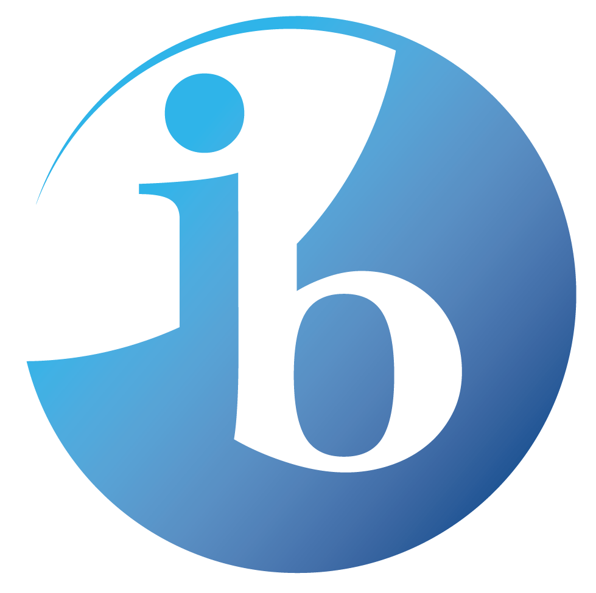
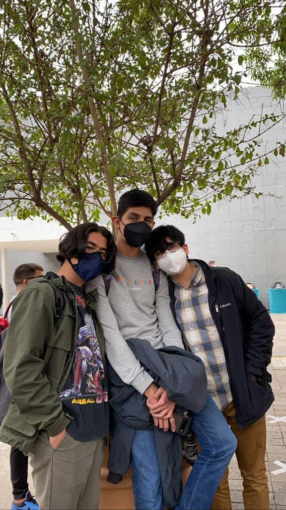
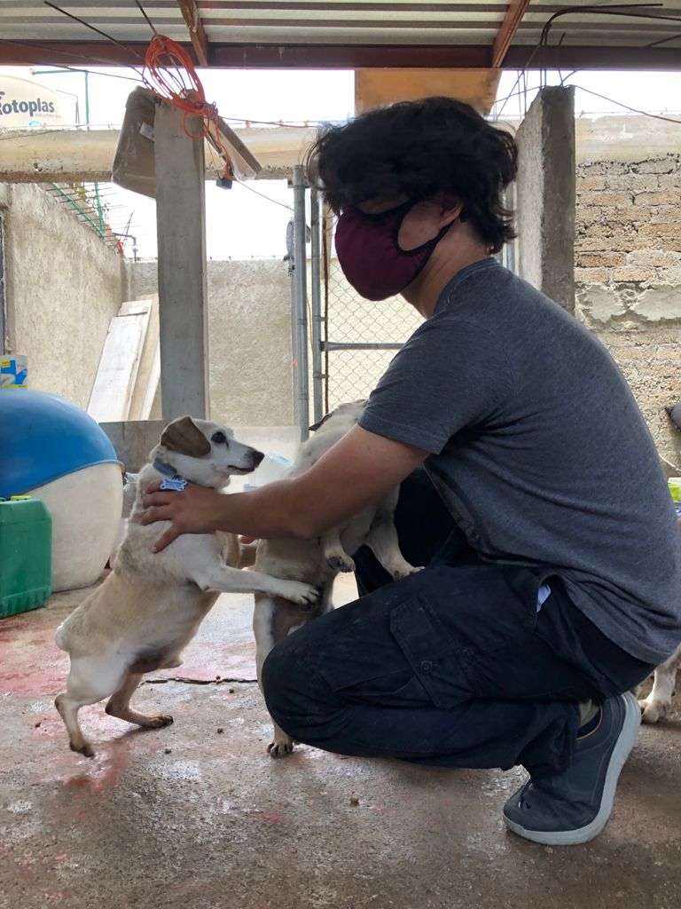

| Perfil IB | CAS | Semestre 1 | Semestre 2 | Semestre 3 | Semestre 4 |
|---|
---
Por el momento esta página tiene problemas de compatibilidad con Chrome, favor de probar otro buscador.
| Por el nivel que ofrece, y la manera en la que me permite retarme a mi mismo, probando que tanto puedo esmerarme, y que tanto puedo crecer como persona |  |
| Una de las preguntas más difíciles que le puedes hacer a una persona, en este intento diré que soy un aficionado a hacerme la vida dificil, me encanta la computación y las matemáticas, me motivo con música e intento dibujar. Pero más allá de eso quiero hacer un cambio en el mundo, quiero demostrar que la manera polarizada en la que vemos el mundo de hoy en día no es la única opción. Creo en la capacidad de empoderamiento de cualquier individuo, y creo en que cada pensamiento es digno de escucharse y cuestionarse. |  |
| Fuera de la escuela, de los Internals o de las preocupaciones que el IB carga consigo, considero importante generar más habilidades que sirvan para la mi vida académica pero que no necesariamente. Durante lo que ha durado el IB he aprendido mucho sobre perros, sobre lenguajes de programación, sobre remo y muchas otras cosas para las que tendrás que leer el reto de este blog. |  |
---
jqp983 - A01660732